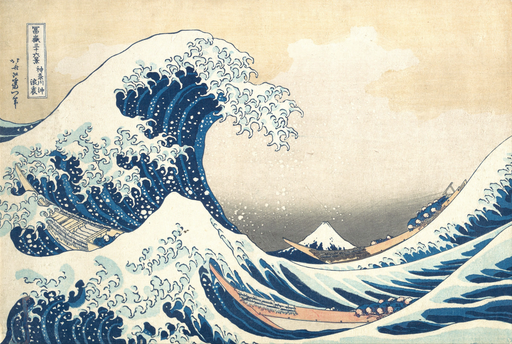

Japanese Writing & Shodō Studio
Step-by-Step Stroke Order (書き順) · Sumi Brush Simulatorあ (a) — 3 Strokes
Open vowel /a/, pronounced like "ah" in father.
Language Foundations · World Languages · K–12
Japanese Language Foundations
Japanese is an agglutinative language with an exceptionally logical structure: verbs anchor the end of the clause, grammatical relations are tagged with particles, sounds are metered in equal beats called mora, and every character is written in a consistent stroke order designed for brush balance and speed.

How to Write Japanese: Stroke Order & Brush Endings
Japanese stroke order (kakijun 書き順) is not arbitrary memorization — it follows natural hand ergonomics so each stroke leads smoothly toward the next and characters sit squarely inside an imaginary grid. Click any example button below to animate and practice that character in the studio above.
The 6 Golden Rules of Stroke Order
Horizontal bars and top dots are always drawn from the top tier downward before lower curves.
Parallel vertical elements and left-to-right components progress left first, right second (like 川 and い).
When a horizontal and vertical line cross, write the horizontal bar first, then cut down through it.
When a central spine anchors symmetric wings — as in 山 (mountain) or 水 (water) — draw the center spine first.
For box shapes (日, ロ), write left wall, top+right corner, fill the interior, then seal the bottom floor last.
In diagonal crossings (人, 木, 火), the leftward sweep precedes the rightward stabilizing sweep.
Three Signature Brush Endings (Tome, Hane, Harai)
Press slightly at a 45° angle at the end of a bar and lift straight up so the stroke ends squarely.
Pause briefly at the corner, gather the brush bristles, and flick crisply inward toward the next stroke.
Keep the brush moving while gradually lifting off the paper so the ink thins into a luminous point.
The Four Treasures of Shodō (文房四宝 Bunbō Shihō)
Traditional Japanese calligraphy relies on four balanced tools: Fude (筆, bamboo & animal-hair brush), Sumi (墨, soot-and-glue ink stick ground with water), Suzuri (硯, carved inkstone), and Hanshi (半紙, absorbent mulberry paper). Practice in the studio to combine all eight classic brush motions in one character.
How Japanese Works: The Four Pillars
Understand the linguistic engine underneath the three Japanese writing systems:
Verbs always finish the sentence: Subject + Object + Verb. Information flows from broad context to final action.
Postpositions like は (wa), を (o), and に (ni) tag the syntactic role of whatever word precedes them.
Hiragana for grammar & native words; Katakana for loanwords; Kanji for conceptual roots.
Every beat (mora) receives equal duration: to-u-ky-o-u is 4 beats, not 2 English syllables. Pure, predictable cadence.
Japanese Sentence Engine: SOV & Particles
Assemble Japanese sentences in correct order. In Japanese, particles act like magnetic tags telling the listener whether a noun is the topic, the direct object, or the destination.
Foundational Greetings & Politeness Quiz
Japanese social interaction balances hierarchy, gratitude, and respect (敬語 keigo). Test your recognition of core survival phrases:
(Konnichiwa)
(Arigatou)
Roadmap for Future Japanese Lessons
Learn complete 46 Hiragana and 46 Katakana charts, dakuten voicing marks, geminate stops (っ), and pitch accent contours.
The regular geometry of Godan and Ichidan verbs, past tense, negative forms, and connecting actions using the ubiquitous て-form.
Building the Jōyō Kanji foundation radical by radical, parsing authentic sentences, compound words (Jukugo), and conversational fluency.